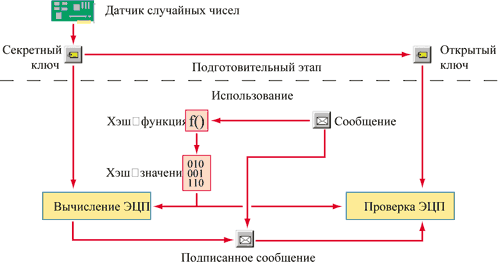
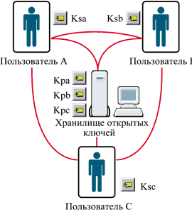

Сергей Панасенко,
начальник отдела разработки программного обеспечения фирмы "Анкад"
develop@ancud.ru
Механизм действия
Рассмотрим на простом примере, как устроена исполнительная процедура электронной цифровой подписи. Предположим, есть два пользователя i и j, и один из них (пусть это будет пользователь i) решил послать другому важные данные, используя ЭЦП. Для этого пользователи должны выполнить следующие действия (рис. 1), состоящие, по сути, из двух этапов: подготовительного и исполнения передачи.
|  |
| Рис. 1. Схема использования ЭЦП. |
На подготовительном этапе пользователь i создает пару своих личных ключей ЭЦП: секретный ключ Ksi и открытый ключ Kpi. Открытый ключ Kpi вычисляется из соответствующего ему секретного ключа; обратное же вычисление невозможно (аналогично тому, как это происходит с алгоритмами асимметричного шифрования - см. статью "Современные алгоритмы шифрования", "BYTE/Россия" № 8'2003). После этого пользователь i передает открытый ключ Kpi пользователю j.
На этапе исполнения процедуры пользователь i перед отправкой сообщения подписывает его с помощью своего секретного ключа Ksi. Заметим, что пользователь j может проверить подпись пользователя i в сообщении с помощью Kpi - открытого ключа абонента i.
Если же пользователь j тоже захочет ответить пользователю i подписанным сообщением, то он должен создать собственные ключи и передать пользователю i свой открытый ключ для проверки ЭЦП.
С теоретической точки зрения электронная подпись представляет собой последовательность фиксированной длины (длина эта зависит от конкретного алгоритма ЭЦП), которая вычисляется определенным образом с помощью содержимого подписываемой информации и секретного ключа.
Секретный ключ ЭЦП также есть не что иное, как последовательность определенной длины. Это тот самый уникальный элемент, без знания которого невозможно подделать ЭЦП его владельца. Соответственно пользователь должен хранить свой секретный ключ таким образом, чтобы никто другой не смог "выведать" его значение. Если же у владельца ключа есть основания полагать, что ключ известен кому-либо еще, то такой секретный ключ ЭЦП считается скомпрометированным, и "потерпевший", допустивший компрометацию своего ключа, должен оповестить всех остальных корреспондентов, что его открытый ключ следует считать недействительным. После оповещения легко создать новую пару ключей ЭЦП, гарантирующую авторство писем. Механизмы такого оповещения определены, например, международным стандартом X.509.
Если же этого не сделать, подпись "потерпевшего", утерявшего свой ключ, может появиться под любым электронным документом. И тогда, по аналогии с обычной подделкой документов, можно сказать, что злоумышленник, завладевший чужим ключом, научился удачно подделывать подпись его владельца, да вдобавок еще и получил возможность ставить его печать.
Открытый ключ, наоборот, должен быть доступен всем, с кем данный корреспондент намерен обмениваться информацией, заверенной личной подписью. Например, он может храниться на каком-нибудь разделяемом ресурсе.
Естественно, количество пользователей такой системы может быть сколь угодно большим; каждый из них (рис. 2) должен, во-первых, иметь и надежно хранить собственный секретный ключ, а во-вторых - получить доступ к открытым ключам остальных корреспондентов.
|  | Рис. 2. Распределение ключей ЭЦП. |
Физическое представление ключей ЭЦП зависит от конкретной системы, поддерживающей использование ЭЦП. Чаще всего ключ записывается в файл, который, в дополнение к самому ключу, может содержать, например, информацию о пользователе - владельце ключа, о сроке действия ключа, а также некий набор данных, необходимых для работы конкретной системы.
Данные о владельце ключа позволяют реализовать "побочную", но важную функцию ЭЦП - установление авторства, поскольку при проверке подписи сразу же становится ясно, кто подписал то или иное сообщение. Обычно программы, осуществляющие проверку ЭЦП, настраиваются так, чтобы результат исполнения появлялся на экране в удобном для восприятия виде и с указанием поставившего ЭЦП пользователя, например, так:
"Подпись файла message.doc верна (Автор: Иванов Иван Иванович)"
Функции хэширования
Как и для всякой последовательности, существует формула вычисления ЭЦП, которую математически можно представить как:
S = f (h(M), Ks),
где M - текст сообщения, Ks - секретный ключ, h(M) - функция хэширования.
Согласно приведенной зависимости, для формирования ЭЦП в качестве исходного значения берется не само сообщение, а его хэш (результат обработки сообщения хэш-функцией). Дело в том, что заверяемый подписью текст может быть абсолютно произвольного размера: от пустого сообщения до многомегабайтного файла, содержащего, например, графическую информацию. Но практически все применяемые алгоритмы вычисления ЭЦП используют для расчета сообщения заранее заданной стандартной длины (например, в отечественном алгоритме ЭЦП ГОСТ Р 34.10-94 этот размер определен равным 32 байтам). Задача хэш-функции - из сообщения произвольной длины вычислить цифровую последовательность нужного размера (скажем, 32 байта).
И хотя задача такой хэш-функции вполне тривиальна, сама функция должна удовлетворять определенным требованиям. Прежде всего необходимо, чтобы результат (хэш сообщения) однозначно соответствовал исходному сообщению и изменялся при любой модификации последнего, даже самой незначительной. Кроме того, хэш сообщения должен вычисляться таким образом, чтобы для любого сообщения M было бы невозможно подобрать такое сообщение M', для которого h(M) = h(M').
Другими словами, трудоемкость успешного вычисления сообщения M' по известному сообщению M и его хэшу h(M), удовлетворяющего условию h(M') = h(M), должна быть эквивалентна трудоемкости прямого перебора сообщений. Невыполнение этого условия создало бы возможность для злоумышленника подменять сообщения, оставляя их подпись верной.
С другой стороны, очевидно, что хэш будет одинаков для многих сообщений, поскольку множество возможных сообщений существенно больше множества возможных хэш-значений (действительно, количество сообщений безгранично, а количество хэш-значений ограничено числом 2N, где N - длина хэш-значения в битах).
К числу наиболее известных функций хэширования принадлежат следующие.
- Отечественный стандарт ГОСТ Р 34.11-94. Вычисляет хэш-значение размером 32 байта.
- MDx (Message Digest) - семейство алгоритмов хэширования, которые наиболее распространены за рубежом. Например, алгоритм MD5 применяется в последних версиях Microsoft Windows для преобразования пароля пользователя в 16-байтное число.
- SHA-1 (Secure Hash Algorithm) - алгоритм вычисления 20-байтного хэш-значения входных данных. Он также очень широко распространен в мире, преимущественно в сетевых протоколах защиты информации.
Помимо средства для создания ЭЦП, хэш-функции успешно используются для аутентификации пользователей. Существует немало криптографических протоколов аутентификации, основанных на применении хэш-функций.
Хэширование по ГОСТ Р 34.11-94
Чтобы обеспечить невозможность подбора сообщений с одинаковым хэш-значением, отечественный стандарт хэширования ГОСТ Р 34.11-94 шифрует исходные данные, используя другой отечественный криптостандарт ГОСТ 28147-89. Процедура вычисления хэш-значения содержит несколько шагов-этапов. На начальном этапе (шаг 1) инициализируется регистр хэш-значения. Если длина сообщения не превышает 256 бит, осуществляется переход к шагу 3, в противном случае - к шагу 2.
На шаге 2 выполняется итеративное вычисление хэш-значения блоков хэшируемых данных по 256 бит с использованием хранящегося в регистре хэш-значения предыдущего блока. Набор операций включает генерацию ключей шифрования на основе блока хэшируемых данных, зашифрование хранящегося в регистре хэш-значения (в виде четырех блоков по 64 бит) по алгоритму ГОСТ 28147-89 в режиме простой замены и перемешивание результата. Процедура шага 2 повторяется до тех пор, пока длина необработанных входных данных не станет меньше или равной 256 бит, после чего происходит переход к шагу 3.
Шаг 3 включает несколько операций. Прежде всего при необходимости необработанная часть сообщения дополняется до 256 бит битовыми нулями. Затем вычисляется хэш-значение (см. шаг 2), которое и есть результат - хэш сообщения.
Известные алгоритмы ЭЦП
RSA
Разработанный в 1978 г. алгоритм асимметричного шифрования RSA был первым, который стал широко применяться и для вычисления ЭЦП. Его характерная особенность - использование одной и той же схемы и для асимметричного шифрования, и для создания ЭЦП (асимметричное шифрование с помощью RSA подробно описано в статье "Современные алгоритмы шифрования", "BYTE/Россия" № 8'2003).
Вспомним базовые характеристики алгоритма асимметричного шифрования RSA. Его основной параметр - модуль системы:
N = P * Q,
где P и Q - случайные большие простые числа.
Секретный ключ Ks выбирается случайным образом, а открытый ключ Kp вычисляется по секретному из соотношения:
(Ks * Kp) = 1 mod F(N),
где F(N) - значение функции Эйлера.
А теперь рассмотрим применение алгоритма RSA для формирования ЭЦП на примере вычисления и проверки электронной подписи (S) сообщения M.
Первый шаг - вычисление хэша сообщения m = h(M), который затем шифруется на секретном ключе Ks (вспомним, что при шифровании по алгоритму RSA для зашифрования используется открытый ключ!). Для алгоритма ЭЦП RSA S = mKs mod N.
Получатель, желающий проверить значение S сообщения M, также вычисляет хэш сообщения по формуле m = h(M) и расшифровывает S с помощью открытого ключа Kp, используя асимметричный алгоритм шифрования RSA, согласно выражению m' = SKp mod N.
Если m' = m, ЭЦП сообщения признается верной. В противном случае подпись считается поддельной и делается вывод о том, что целостность сообщения нарушена.
Итак, в криптосистеме RSA секретный ключ используется для вычисления ЭЦП или для расшифрования сообщений, а открытый - для проверки ЭЦП или зашифрования сообщений.
Следует отметить и ряд недостатков, свойственных формированию ЭЦП с использованием RSA, причем часть из них унаследованы от используемого алгоритма шифрования RSA. Среди последних стоит упомянуть о том, что ЭЦП RSA уязвима к мультипликативной атаке, т. е. алгоритм ЭЦП RSA позволяет злоумышленнику, даже не зная секретный ключ Ks, вычислить подписи сообщений, результат хэширования которых совпадает с произведением результатов хэширования подписанных ранее сообщений.
Рассмотрим три сообщения M1, M2 и M3, обладающих следующими свойствами:
m1 = h(M1), m2 = h(M2), m3 = h(M3)
m3 = m1 * m2 mod N
При этом допустим, что злоумышленник имеет реальные подписи (т. е. вычисленные законным владельцем ключа Ks) сообщений M1 и M2:
S1 = m1Ks mod N
S2 = m2Ks mod N
Тогда определить подпись сообщения M3 не составит труда:
S3 = S1 * S2 mod N,
поскольку
S1 * S2 mod N = mKs * m2Ks mod N = (m1 * m2)Ks mod N = m3Ks mod N = S3.
Утешает одно. Несмотря на кажущуюся простоту этой операции, имея всего лишь два подписанных сообщения, атаку осуществить достаточно сложно, поскольку необходимо еще и подобрать сообщение с нужным правильным хэшем. Однако с увеличением количества сообщений, подписанных владельцем ключа Ks, сложность подбора существенно снижается, причем нелинейно.
Существует и еще одна, не менее важная проблема, которую можно отнести к недостаткам применения данного метода формирования ЭЦП, - проблема нецелевого использования секретного ключа.
Предположим, среди знакомых некоего пользователя - владельца секретного ключа Ks завелся злоумышленник. Под каким-либо предлогом этот мошенник просит пользователя расшифровать своим ключом Ks по алгоритму асимметричного шифрования RSA некое зашифрованное сообщение С. Доверчивый пользователь расшифровывает это сообщение с помощью формулы M = CKs mod N и отсылает результат (расшифрованное сообщение) злоумышленнику.
На первый взгляд, опасности никакой нет. Однако при внимательном рассмотрении видно, что M - это по сути значение ЭЦП сообщения, хэш которого равен C. Следовательно, легальный пользователь поставил свою подпись под неким сообщением и отправил ее злоумышленнику!
Известно, что одна из наиболее серьезных проблем обеспечения информационной безопасности - низкая квалификация пользователей, и можно еще добавить: их удивительная беспечность, а также беззащитность многих из них перед методами социальной инженерии. Несмотря на кажущуюся надуманность описанной в данном примере атаки, подобные инциденты встречаются достаточно часто, и атака, к сожалению, бывает успешной.
В качестве меры противодействия описанному здесь трюку пользователям алгоритма RSA рекомендуется применять для собственно асимметричного шифрования и для ЭЦП разные пары ключей, и уж непременно использовать все ключи только по назначению.
Как упоминалось выше, в файле, где хранится ключ, существуют дополнительные поля, содержимое которых несет в себе различную функциональность. Открытый ключ наиболее употребляемого в мире формата (X.509 версии 3) обязательно сопровождается кодом назначения ключа, т. е. указывает, служит ли данный конкретный ключ ключом для асимметричного шифрования или для формирования ЭЦП.
Продолжая примеры "излишней доверчивости", предположим, что ключ Ks, которым пользователь расшифровал присланное злоумышленником сообщение C, имеет парный открытый ключ Kp. А в структуре последнего указано, что он предназначен для ассиметричного шифрования, но не для создания ЭЦП.
"Правильное" программное обеспечение просто не позволит применять такой ключ для проверки ЭЦП, а вычисленная с помощью ключа Ks ЭЦП никогда не будет признана верной - по причине иного назначения ключа. А значит, и подпись получена обманным путем. Возможна, конечно, и ошибка при создании ЭЦП легального сообщения, но в этом случае отправителю потребуется еще раз подписать сообщение ключом, предназначенным для ЭЦП.
DSA
Алгоритм DSA (Digital Signature Algorithm) был разработан в 1981 г. и с тех пор используется как стандарт США для электронной цифровой подписи - Digital Signature Standard (DSS). Согласно определению стандарта DSS, алгоритм DSA предусматривает применение в качестве хэш-функции алгоритма SHA. Заметим, что параметры алгоритма не засекречены.
DSA базируется на применении больших простых чисел одинаковой размерности (от 512 бит) - G и P. Среди его параметров присутствует и простое число q размерностью 160 бит - делитель числа (P - 1). Что же касается секретного ключа Ks, то он представляет собой целое число, случайно выбираемое из диапазона 1Kp = GKs mod P.
Вычисление ЭЦП согласно алгоритму DSA и ее проверка приведены в табл. 1.
Таблица 1. Процедуры вычисления ЭЦП как (r, s) и ее проверки согласно алгоритму DSA
| Последовательность вычислений | Последовательность проверок | |||
| Операция | Формула/условие | Операция | Формула/условие | Результат |
| Вычисление хэша сообщения | m = h(M) | Проверка условий | 0 < r > q 0 < s < q> | Нет - любое = ЭЦП неверна |
| Выбор случайного числа x | 1 < x < q | Вычисление промежуточных величин | m = h(M) w = 1/s * mod q u1 = (m ( w) mod q u2 = (r ( w) mod q | Н/п |
| Определение первой части, r | r = (Gx mod P) mod q | Определение первой части ЭЦП | v = ((Gu1 * Kpu2) mod P) mod q | Н/п |
| Определение второй части, s* | s = [(m + r * Ks)/x] * mod q | Проверка равенства | v = r | Нет - ЭЦП неверна |
| Примечания: Ks - секретный ключ; Kp - открытый ключ. Н/п - неприменимо. * Поскольку все вычисления выполняются в конечном поле, определяемом значением q, то s - целое число и вычисляется как s = (m + r * Ks) * (1/x) mod q, где (1/x) - целое, элемент конечного поля, обратный x, которое вычисляется по обобщенному алгоритму Евклида. | ||||
Существует строгое математическое доказательство, что условие v = r выполняется тогда и только тогда, если подпись (r, s) вычислена для сообщения M именно с помощью ключа Ks, на основании которого был определен использованный при проверке ключ Kp. Если же сообщение было изменено в процессе передачи, то значения m и u1 (которое зависит от m) будут неверными, и в итоге значения v и r не совпадут.
По сравнению с описанным выше алгоритмом RSA у DSA есть ряд достоинств. Во-первых, при любом достижимом уровне криптостойкости, который определяется размерностью чисел P и Q, числа q, Ks, r, s имеют фиксированную размерность (каждое по 160 бит), поэтому и ЭЦП присуща фиксированная размерность - 320 бит. Отсюда следует, что время вычислений для DSA существенно меньше, чем при использовании, например, RSA с тем же уровнем криптостойкости.
Во-вторых, при проверке ЭЦП большинство операций с числами w, u1, u2, s также выполняются по модулю 160 бит, что, в свою очередь, сокращает объем требуемых ресурсов.
Но не бывает объекта без недостатков. Для DSA это наличие в нем ресурсоемких операций определения обратных величин по модулю q. Однако данный "минус" вполне компенсируется применением так называемых предвычислений (т. е. выполнением части вычислений заранее). В частности, можно предварительно сгенерировать массив случайных значений x и вычислить для всех x этого массива обратные величины 1/x. Кроме того, поскольку значение r не зависит от хэша подписываемого сообщения (т. е. от самого сообщения), удобно заранее вычислить и набор значений r как r = (Gx mod P) mod q.
Подпись по ГОСТ Р 34.10-94
По своей структуре алгоритм, определенный в отечественном стандарте ГОСТ Р 34.10-94, весьма схож с описанным выше DSA. Параметры его также не секретны:
p - большое простое число размерностью 512 или 1024 бит (значение больше 2509 или 21020 соответственно);
q - делитель (p - 1), простое число размерностью 256 бит (значение больше 2254);
a - любое число, отвечающее условиям 1
Секретный ключ Ks выбирается случайным образом из диапазона 0
Таблица 2. Процедуры вычисления ЭЦП как (r, s) и ee проверки по алгоритму ГОСТ Р 34.10-94
| Последовательность вычислений | Последовательность проверок | |||
| Операция | Формула/условие | Операция | Формула/условие | Результат |
| Вычисление хэша сообщения | m = h(M) | Проверка условий | 0 < r < q 0 < s < q | Нет - любое = ЭЦП неверна |
| Проверка условия* | m [не равно] 0 mod q | |||
| Выбор случайного числа x | 0 < x < q | Вычисление промежуточных величин | v = mq-2 mod q z1 = (s ( v) mod q z2 = ((q - r) ( v) mod q | Н/п |
| Определение первой части, r** | r = (ax mod p) mod q | Определение первой части ЭЦП | u = (az1 * yz2) mod p) mod q | Н/п |
| Определение второй части, s | s = (Ks ( r + x ( m) mod q | Проверка равенства | u = r | Нет - ЭЦП неверна |
| Примечания: Ks - секретный ключ. Н/п - неприменимо. * При m = 0 mod q значение m принимается равным 1; ** при r = 0 - возврат к выбору другого случайного числа x. | ||||
Различия между алгоритмами DSA и ГОСТ Р 34.10-94 весьма незначительны и в основном технические. Во-первых, в них по-разному вычисляется значение s, и соответственно применяются другие формулы для проверки ЭЦП. Во-вторых, алгоритм ГОСТ Р 34.10-94 имеет существенно больший запас стойкости по сравнению с DSA, поскольку основной параметр первого, q, имеет размерность 256 бит, а параметры DSA ограничены длиной в 160 бит.
Заметим, что в стандарте ГОСТ Р 34.10-94, кроме описания данного алгоритма формирования и проверки ЭЦП и контрольного примера, с помощью которого можно по шагам проверить корректность реализации алгоритма, содержатся также процедуры генерации параметров a, p и q (а это весьма нетривиальная математическая задача).
Новый отечественный стандарт ЭЦП
В 2001 г. был принят новый отечественный стандарт на алгоритм формирования и проверки ЭЦП. Его принципиальное отличие от старого ГОСТ Р 34.10-94 состоит в том, что все специфицированные в нем вычисления исполняются в группе точек эллиптической кривой, определенной над конечным полем Fp. Принадлежность точки (пары чисел x и y) данной группе определяется соотношением:
y2 [тождественно] x3+ ax + b mod p
При этом простое число p>3, а a и b - константы, удовлетворяющие условиям:
a < p, b < p
4a3 + 27b2 [не равно] 0 mod p
Дальнейшие математические подробности читатель может найти в тексте данного стандарта - ГОСТ Р 34.10-2001. Хотелось бы только добавить, что, во-первых, принципы вычислений по данному алгоритму аналогичны применяемым в предыдущем стандарте ГОСТ Р 34.10-94. Сначала генерируется случайное число x, с его помощью вычисляется r-часть ЭЦП, затем s-часть ЭЦП вычисляется из r-части, значения x, значения секретного ключа и хэш-значения подписываемых данных. При проверке же подписи аналогичным образом проверяется соответствие определенным соотношениям r, s, открытого ключа и хэш-значения информации, подпись которой проверяется. Подпись считается неверной, если соотношения неверны.
Есть и еще один нюанс. "Старый" ГОСТ Р 34.10-94 не отменен, и в настоящее время параллельно действуют два отечественных стандарта на ЭЦП. Справедливости ради следует заметить, что для прежнего ГОСТа принято одно ограничение: при реализации ЭЦП по стандарту ГОСТ Р 34.10-94 разрешено использовать только 1024-битные значения параметра p.
В перспективе криптосистемы на основе эллиптических кривых, вероятно, вытеснят существующие алгоритмы ЭЦП, асимметричного шифрования и выработки ключей парной связи (когда ключ для шифрования информации между двумя конкретными пользователями вычисляется из секретного ключа отправителя информации и открытого ключа получателя). И тому есть веские основания. Алгоритмы на базе эллиптических кривых позволяют заметно сократить время вычислений без потерь криптостойкости или соответственно увеличить уровень защиты при тех же временных затратах.
Нет в мире совершенства...
К сожалению, использование ЭЦП связано со своими, весьма серьезными проблемами. Наиболее острая аналогична "основному вопросу" асимметричного шифрования: как убедиться, что открытый ключ для проверки ЭЦП действительно принадлежит лицу, поставившему подпись, а не подменен злоумышленником по дороге? Ведь успешная подмена открытого ключа ложным позволит злоумышленнику легко подделать вожделенную подпись. Конечно, есть и "противоядия" - методы борьбы с подменой открытых ключей, например, их сертификация. Но это влечет за собой все большее и большее усложнение механизмов защиты...
Источники дополнительной информацииПолное описание описанных в статье алгоритмов и стандартов можно найти в следующих документах или на сайтах.
|